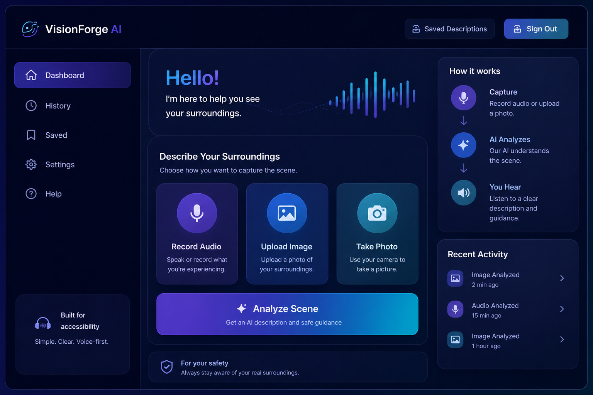

What you can do
Built for quick help when someone needs to understand what is around them.
Upload an Image
Send a photo of the surrounding area so the assistant can inspect the scene.
Ask by Voice
Ask questions like “Can I walk forward?” or “What is in front of me?”
Hear Guidance
Get a spoken response focused on obstacles, direction, and safe movement.
Save Results
Store previous analyses in cloud logs for review, testing, and demonstration.
